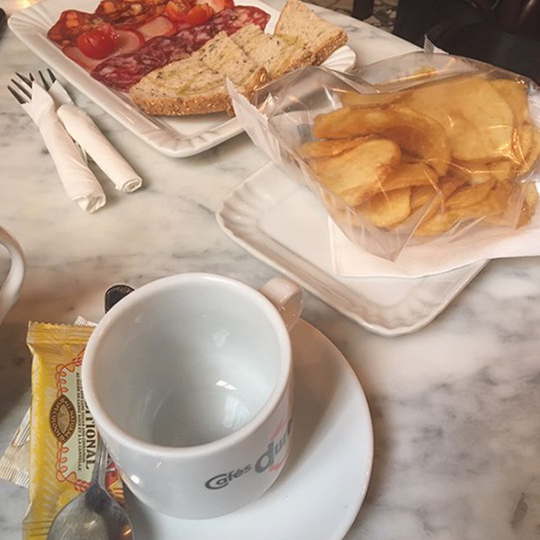

Desayunos tradicionales
ver
- Churros. ¡Recién hechos! Y con azúcar glass por encima
- Tostada de pan integral con pavo braseado, queso cremoso y tomate
- Bollería francesa de mantequilla
- Croissant o barrita a la plancha
Desayunos tradicionales
ver
- Croque monsieur
- Mollete con tomate y jamón ibérico de bellota
- Nuestras clásicas tortitas con nata y sirope
- Tortilla con salchicha, salmón o beicon, acompañados de patatas
Meriendas
- Desde las 17:00
- Tortilla española y pan con tomate
- Croissant mixto gratinado con bechamel
- Desde las 15:00
- Helados
- BATIDOS DE HELADOS
- BOLA DE HELADO
- Sabores: Stracciatella, Turrón, Chocolate, Vainilla
